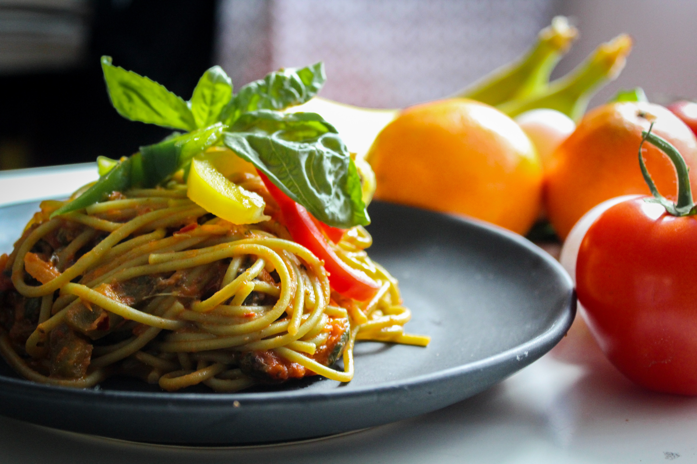
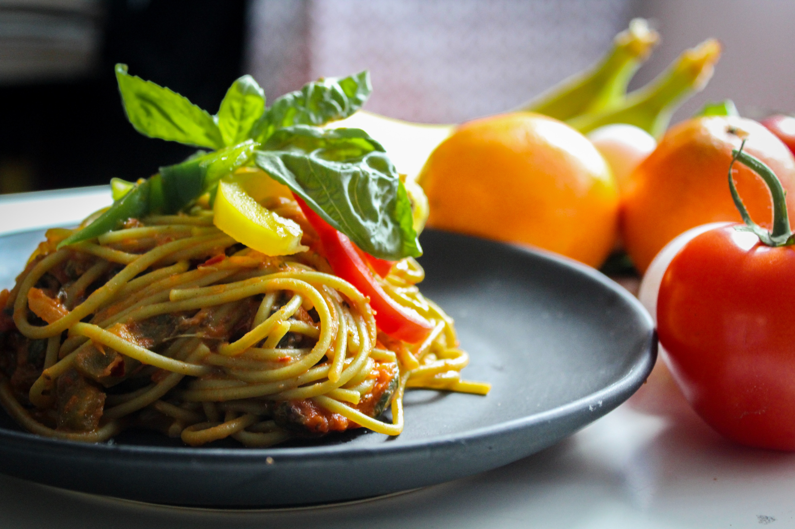
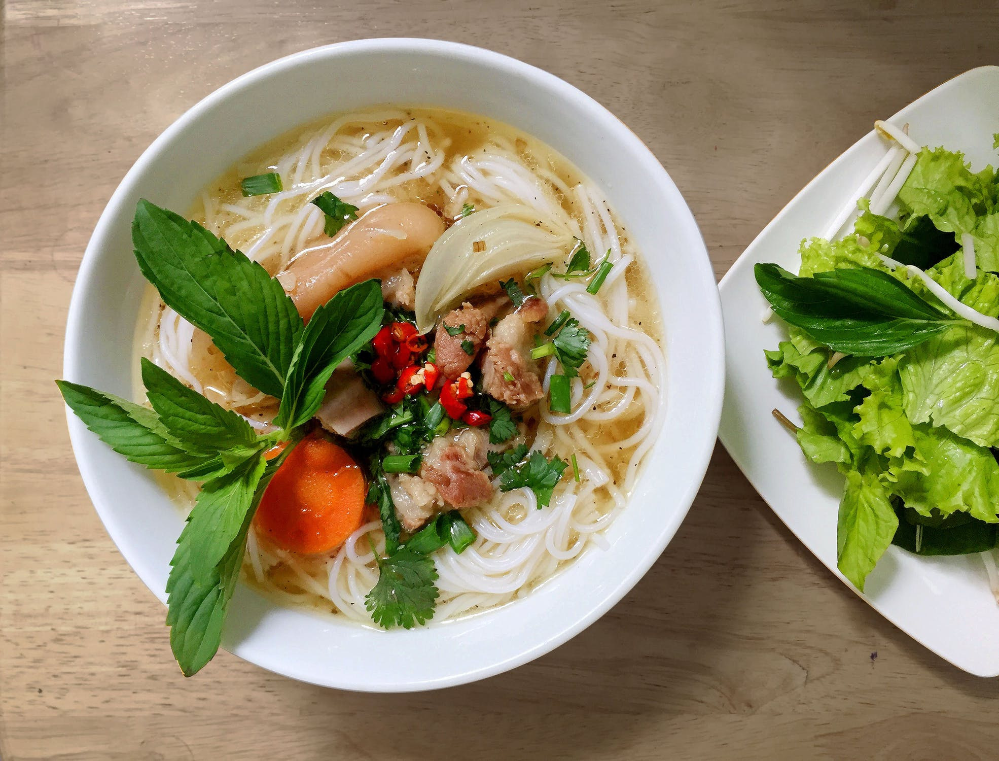
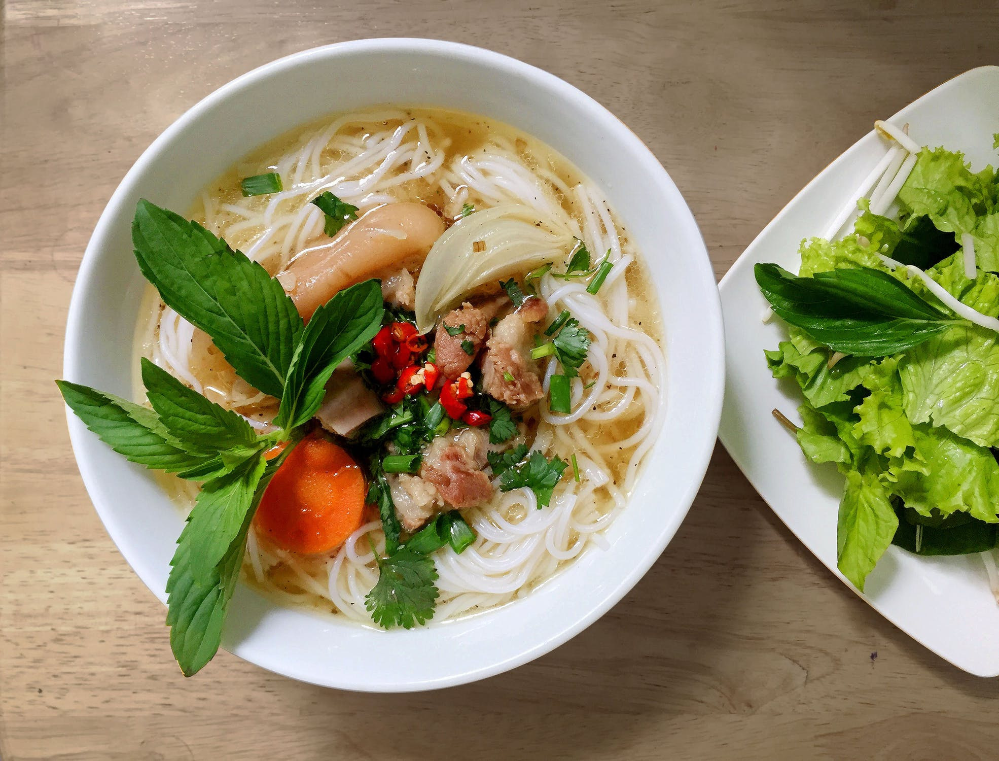

1st Century AD
In writings of Horace dating back to the 1st century AD, the word lagana is an everyday food used to refer to sheets of fried dough.
Many shapes
One name
Pasta.
In writings of Horace dating back to the 1st century AD, the word lagana is an everyday food used to refer to sheets of fried dough.
Athenaeus of Naucratis writes about a recipe for lagana which he gives credit to the 1st century Chrysippus of Tyana: sheets of dough made of wheat flour and the juice of crushed lettuce, then flavoured with spices and deep-fried in oil.
A cookbook dating back to the early 5th century AD describes a dish called lagana that consisted of layers of dough with meat stuffing, an ancestor of modern-day lasagna
Pasta becomes very popular due to its easy storage which allowed people to store it on ships when exploring the New World.
Pasta is now available all around the world during discovery voyages.
Naples has rudimentary machines for producing pasta, later establishing the kneading machine and press, making pasta manufacturing cost-effective.
A license for the first pasta factory was issued in Venice, Italy in 1740.
the first mentioning of pasta with tomato sauce appears in the cookbook L'Apicio Moderno written by Roman chef Francesco Leonardi.
Pasta is mostly mass-produced in factories, while only a small portion is crafted from hand. Additionally, it estimated that Italians eat roughly 60lbs. of pasta per person per year! This easily surpasses Americans which on average each 20lbs. of pasta per person each year.

 



 

Q: Did you hear about the Italian chef that died?
A: He pasta way.
Q: What do blonds and spaghetti have in common?
A: They both wiggle when you eat them.
Q: What do Italians eat on halloween?
A: Fetuccini A-fraid-o
Q: What do you get when you cross an Italian and a Jew?
A: Olive Garden
Q: What would you get if you crossed pasta with a snake?
A: Spaghetti that wraps itself around a fork
Q: What is the difference between the female cast of the "Jersey Shore" and a plate of spaghetti?
A: Spaghetti moves when you eat it!
Q: What does Arnold Schwarzenegger say before eating pasta?
A: PASTA LA VISTA BABY.
Q: What do you call a fake noodle?
A: An impasta.
Source: Jokes4us.com